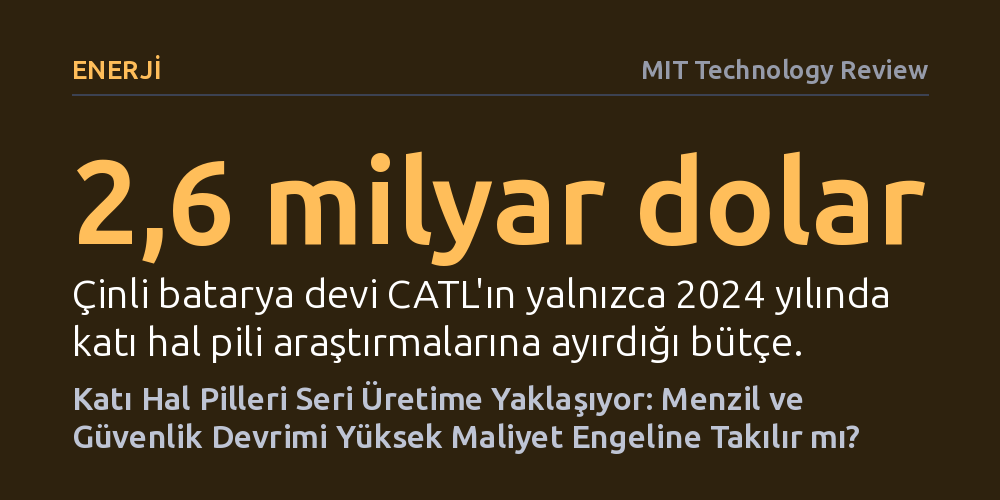

ENERJI · MIT Technology Review · 2026-10-22
Katı hal pilleri laboratuvar aşamasını aşıp seri üretim eşiğine gelse de yüksek maliyetler yaygınlaşmayı 2030'ların ortasına erteleyebilir. Yine de dev yatırımlar ve yeni seramik üretim teknikleri, elektrikli araçlarda menzil ve şarj devrimini hızlandırıyor.
Elektrikli araçların ve temiz enerjinin geleceği sayılan katı hal pillerinin artık teorik bir vaat olmaktan çıkıp somut bir endüstriyel üretim yarışına dönüştüğünü gösteriyor.

Akıllı telefonlardan elektrikli otomobillere ve devasa şebeke depolama tesislerine kadar modern dünyayı lityum-iyon piller sırtlıyor. Ancak lityum iyonlarını sıvı bir kimyasal elektrolit havuzunda hareket ettirerek çalışan bu mekanizmanın çok ciddi sınırları bulunuyor. Sıvı elektrolitlerin kolay alev alabilmesi, yüksek sıcaklıklarda yangın riski doğurması ve enerji yoğunluğunun kimyasal sınırlara dayanması, temiz enerji dönüşümünün önündeki en büyük yapısal engellerden biri haline geldi.
Katı hal pilleri tam da bu çıkmaza yanıt olarak öne çıkıyor. Tasarımda yanıcı sıvı çözelti yerine katı seramik veya polimer bir katman kullanılıyor. Bu mimari dönüşüm yalnızca aşırı ısınma ve yangın tehlikesini ortadan kaldırmakla kalmıyor; aynı zamanda çok daha küçük bir hacme çok daha yüksek enerji sığdırılmasına, bataryanın daha hızlı şarj edilmesine ve belirgin biçimde daha uzun bir kullanım ömrüne olanak tanıyor.
Katı hal teknolojisi laboratuvar ortamında uzun süredir kusursuz çalışıyor; ancak sektör yaklaşık on yıldır bu pillerin "birkaç yıl içinde pazara gireceği" vaadiyle oyalanıyor. Seri üretimin gecikmesindeki temel teknik sorun, şarj esnasında bataryanın iç yapısını tahrip eden dendrit adlı iğnemsi lityum kristalleri. Katı elektrolit ile lityum metal anot eşleştiğinde oluşan bu kristaller, beton zemini delen ağaç kökleri gibi katı seramiği çatlatarak diğer kutba ulaşıyor ve hücreyi kısa devre yaptırıyor.
Teknik engeller yalnızca hücre içiyle sınırlı değil; endüstriyel ölçekte üretim süreçleri de devasa bir darboğaz oluşturuyor. Seri üretim hatlarında hatasız ve pürüzsüz seramik elektrolit katmanlarının yüksek hızda üretilmesi gerekiyor. Üstelik kullanılan seramik ve polimer malzemelerin neme karşı aşırı duyarlı olması, montajın bütünüyle özel kuru odalarda yapılmasını şart koşuyor. Bu durum ilk aşamada tesis kurulum maliyetlerini fırlatırken, pillerin maliyet açısından geleneksel lityum-iyon seviyesine inmesinin 2030'ların ortasını bulacağı tahmin ediliyor.
Karşılaşılan büyük zorluklara rağmen son dönemde laboratuvardan sanayiye geçişte önemli kilometre taşları geride bırakıldı. Silikon Vadisi merkezli QuantumScape, lityumla tam uyumlu özel bir seramik malzeme geliştirerek dendrit oluşumunu engellemeyi başardığını açıkladı. Şirket, geleneksel olarak fırınlarda günlerce pişirilen seramik elektrolitleri dakikalar içinde işleyip ısıl işleme tabi tutan yeni bir seri üretim tekniği duyurdu. Şirketin kurucu ortağı Tim Holme, ulaştıkları üretim hızını vurgularken "Seramik alanında bunu daha önce kimse yapmamıştı" sözleriyle sektördeki değişimi özetliyor.
Yarış sadece teknoloji girişimleriyle sınırlı değil; küresel otomotiv ve enerji devleri de devasa sermayelerle sahaya inmiş durumda. 2010'dan beri bu alanda araştırma yürüten Toyota, petrol şirketi Idemitsu Kosan ile ortak pilot tesis kurarak 10 dakikada şarj olan ve yaklaşık 1200 kilometre (745 mil) yol katedebilen araçlar vadetti. Küresel batarya pazarının yaklaşık yüzde 40'ını yöneten Çinli batarya devi CATL ise yalnızca 2024 yılında katı hal pili araştırmalarına 2,6 milyar dolar aktardı. Son olarak Mercedes'in katı hal bataryasıyla donattığı EQS modeli tek şarjla 1200 kilometreden fazla kesintisiz mesafe katederek teknolojinin pratik menzil gücünü kanıtladı.
Teknolojinin çalıştığı ve sermaye desteğinin sağlandığı ortada olsa da katı hal pillerinin tüketiciye ulaşma takvimini doğrudan üretim maliyetleri belirleyecek. Otomotiv sektöründeki her ufak maliyet artışı doğrudan tüketici etiketine yansıdığı için, pazara çıkacak ilk katı hal pilli elektrikli otomobiller kaçınılmaz olarak lüks segmentte ve yüksek fiyatlarla yer alacak. Üreticilerin büyük kısmı maliyetlerin lityum-iyon pillerle rekabet edebilir seviyeye gelmesini 2030'lu yılların ortalarından önce beklemiyor.
Benzer bir tereddüt enerji şebekesi depolama tarafında da yaşanıyor. Özellikle yapay zekâ veri merkezlerinin katlanan elektrik talebi güvenilir depolamayı zorunlu kılsa da alıcılar maliyet eğrisi aşağı inmemiş yeni bir kimyaya hemen geçmekte temkinli davranıyor. Buna karşın lityum-iyon pillerin standart 8 saatlik sınırını aşan daha uzun süreli enerji depolama vaadi, katı hal teknolojisini şebeke operatörleri için güçlü bir alternatif yapmaya devam ediyor. Katı hal bataryaları artık bir laboratuvar hayali değil; ancak yaygınlaşmanın hızını fabrikasyon sürecindeki bilinmeyen aksaklıkların ne kadar sürede aşılacağı belirleyecek.